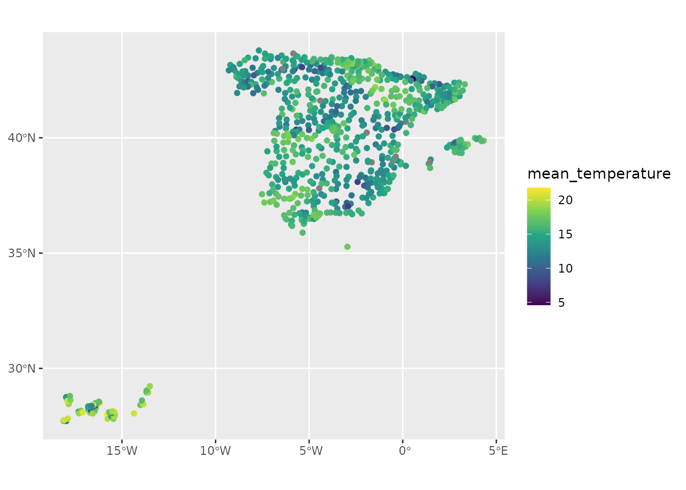

library(meteospain)
library(ggplot2)
library(ggforce)
library(units)
#> udunits database from /usr/share/xml/udunits/udunits2.xml
library(sf)
#> Linking to GEOS 3.12.1, GDAL 3.8.4, PROJ 9.4.0; sf_use_s2() is TRUE
library(keyring)AEMET service
AEMET is the Spanish
national meteorologic service, and is the national meteorology authority
providing quality data for public and research use, as well as
prediction products and disaster warning system. meteospain
only access to the automatic meteorological stations network data.
AEMET options
Temporal resolution
meteospain offers access to the AEMET API at different
temporal resolutions:
- “current_day”, returning the latest 12 hours of measures for all or selected stations.
- “daily”, returning the daily aggregated measures for all or selected stations.
- “monthly”, returning the monthly aggregated measures for only one station.
- “yearly”, returning the yearly aggregated measures for only one station.
In “daily”, a start_date (and optionally an
end_date) arguments must be provided, indicating the period
from which retrieve the data.
In “monthly” and “yearly”, only the years in start_date and
end_date are used, returning all year monthly or yearly
values (i.e start_date = as.Date("2020-12-01") is
the same as start_date = as.Date("2020-01-01") as both will
return all 2020 measures).
Stations
meteospain access the data in the AEMET API collecting
all stations. If a character vector of stations codes is supplied in the
stations argument, a filter step is done before returning
the data to maintain only the stations supplied.
The exception for this are “monthly” and “yearly” temporal resolutions. AEMET API only allows for one station to be retrieved.
AEMET API Key
AEMET API only allow access to the data with a personal API Key. This
token must be included in the api_key argument of
aemet_options function.
To obtain the API Key, please visit https://opendata.aemet.es/centrodedescargas/inicio and
follow the instructions at “Obtencion de API Key”.
It is not advisable to use the keys directly in any script shared or publicly available (github…), neither store them in plain text files. One option is using the keyring package for managing and accessing keys:
install.packages('keyring')
library(keyring)
key_set('aemet') # A prompt asking for the secret (the API Key) will appear.Examples
# current day, all stations
api_options <- aemet_options(
resolution = 'current_day',
api_key = key_get('aemet')
)
api_options#> $resolution
#> [1] "current_day"
#>
#> $start_date
#> [1] "2025-11-11"
#>
#> $end_date
#> [1] "2025-11-11"
#>
#> $stations
#> NULL
#>
#> $api_key
#> [1] "my_api_key"
# daily, all stations
api_options <- aemet_options(
resolution = 'daily',
start_date = as.Date('2020-04-25'), end_date = as.Date('2020-05-08'),
api_key = key_get('aemet')
)
api_options#> $resolution
#> [1] "daily"
#>
#> $start_date
#> [1] "2020-04-25"
#>
#> $end_date
#> [1] "2020-05-08"
#>
#> $stations
#> NULL
#>
#> $api_key
#> [1] "my_api_key"
# monthly, only one station because AEMET API limitations
api_options <- aemet_options(
resolution = 'monthly',
start_date = as.Date('2020-04-25'), end_date = as.Date('2020-05-25'),
station = "0149X",
api_key = key_get('aemet')
)
api_options#> $resolution
#> [1] "monthly"
#>
#> $start_date
#> [1] "2020-01-01"
#>
#> $end_date
#> [1] "2020-12-31"
#>
#> $stations
#> [1] "0149X"
#>
#> $api_key
#> [1] "my_api_key"AEMET stations info
Accessing station metadata for AEMET is simple:
get_stations_info_from('aemet', api_options)
#> Simple feature collection with 947 features and 5 fields
#> Geometry type: POINT
#> Dimension: XY
#> Bounding box: xmin: -18.115 ymin: 27.66528 xmax: 4.323889 ymax: 43.78611
#> Geodetic CRS: WGS 84
#> # A tibble: 947 × 6
#> service station_id station_name station_province altitude
#> * <chr> <chr> <chr> <chr> [m]
#> 1 aemet B013X ESCORCA, LLUC ILLES BALEARS 490
#> 2 aemet B051A SÓLLER, PUERTO ILLES BALEARS 5
#> 3 aemet B087X BANYALBUFAR ILLES BALEARS 60
#> 4 aemet B103B ANDRATX - SANT ELM ILLES BALEARS 52
#> 5 aemet B158X CALVIÀ, ES CAPDELLÀ BALEARES 50
#> 6 aemet B228 PALMA, PUERTO ILLES BALEARS 3
#> 7 aemet B236C PALMA, UNIVERSITAT ILLES BALEARS 95
#> 8 aemet B248 SIERRA DE ALFABIA, BUNYOLA ILLES BALEARS 1030
#> 9 aemet B275E SON BONET, AEROPUERTO BALEARES 47
#> 10 aemet B278 PALMA DE MALLORCA, AEROPUERTO BALEARES 5
#> # ℹ 937 more rows
#> # ℹ 1 more variable: geometry <POINT [°]>AEMET data
api_options <- aemet_options(
resolution = 'daily',
start_date = as.Date('2020-04-25'),
api_key = key_get('aemet')
)
spain_20200425 <- get_meteo_from('aemet', options = api_options)
#> ℹ © AEMET. Autorizado el uso de la información y su reproducción citando a
#> AEMET como autora de la misma.
#> https://www.aemet.es/es/nota_legal
spain_20200425
#> Simple feature collection with 846 features and 19 fields
#> Geometry type: POINT
#> Dimension: XY
#> Bounding box: xmin: -18.115 ymin: 27.66528 xmax: 4.323889 ymax: 43.78611
#> Geodetic CRS: WGS 84
#> # A tibble: 846 × 20
#> timestamp service station_id station_name station_province altitude
#> * <dttm> <chr> <chr> <chr> <chr> [m]
#> 1 2020-04-25 00:00:00 aemet 0009X "ALFORJA" TARRAGONA 406
#> 2 2020-04-25 00:00:00 aemet 0016A "REUS AEROP… TARRAGONA 71
#> 3 2020-04-25 00:00:00 aemet 0016B "REUS (CENT… TARRAGONA 118
#> 4 2020-04-25 00:00:00 aemet 0034X "VALLS" TARRAGONA 233
#> 5 2020-04-25 00:00:00 aemet 0042Y "TARRAGONA " TARRAGONA 55
#> 6 2020-04-25 00:00:00 aemet 0061X "PONTONS" BARCELONA 632
#> 7 2020-04-25 00:00:00 aemet 0066X "VILAFRANCA… BARCELONA 177
#> 8 2020-04-25 00:00:00 aemet 0073X "SITGES" BARCELONA 58
#> 9 2020-04-25 00:00:00 aemet 0076 "BARCELONA … BARCELONA 4
#> 10 2020-04-25 00:00:00 aemet 0092X "BERGA" BARCELONA 682
#> # ℹ 836 more rows
#> # ℹ 14 more variables: mean_temperature [°C], min_temperature [°C],
#> # max_temperature [°C], mean_relative_humidity [%],
#> # min_relative_humidity [%], max_relative_humidity [%],
#> # precipitation [L/m^2], wind_direction [°], mean_wind_speed [m/s],
#> # max_wind_speed [m/s], insolation [h], max_atmospheric_pressure [hPa],
#> # min_atmospheric_pressure [hPa], geometry <POINT [°]>Visually:
spain_20200425 |>
units::drop_units() |>
ggplot() +
geom_sf(aes(colour = mean_temperature)) +
scale_colour_viridis_c()
spain_20200425 |>
ggplot() +
geom_histogram(aes(x = precipitation))
#> `stat_bin()` using `bins = 30`. Pick better value `binwidth`.
#> Warning: Removed 40 rows containing non-finite outside the scale range
#> (`stat_bin()`).